1004B14 POWER UNIT WITH AUTOMATIC TRANSMISSION R + R
- Path
- Procedures > 10 ENGINE > 1004 ENGINE AND POWER UNIT > 1004B POWER UNIT ASSEMBLY > 1004B14 POWER UNIT WITH AUTOMATIC TRANSMISSION R + R
- Kind
- repair procedure (removal / refitting; the operation number is the code)
- Applies to
- engines: 3.2 JTS; all production periods
- Interactive page
- https://sloeber94.github.io/elrnDB-aBrrSpdr/en/#/946004259
Applies to: engines: 3.2 JTS; all production periods
 Removing
Removing
 Refitting
Refitting- Place the gear lever in N.
Op. 1016A10 SOUND-PROOFING COVER - R.R
Op. 0010T84 COOLANT FOR AIR CONDITIONING SYSTEM - DEHYDRATE AND REPRESSURIZE
Op. 7055B54 UNDER ENGINE PROTECTION/GUARD - R.R.
Op. 5530A53 FRONT ALTERNATOR COOLING PIPE - R.R.
Op. 5530A55 REAR ALTERNATOR COOLING PIPE - R.R.
Op. 0010T20 ENGINE COOLANT - CHANGE
- Drain the automatic transmission fluid, refer to the operation
Op. 0010T44 CHANGE AUTOMATIC TRANSMISSION FLUIDS
Op. 4450B12 FRONT WHEELS (TWO) - R+R
Op. 7055B90 LEFT FRONT WHEEL ARCH LINER - R.R.
Op. 7055B91 RIGHT FRONT WHEEL ARCH LINER - R.R.
Op. 7055B65 ENGINE COMPARTMENT DUST COVER IN LEFT FRONT WHEEL ARCH - R.R.
Op. 7055B66 ENGINE COMPARTMENT DUST COVER IN RIGHT FRONT WHEEL ARCH - R.R.
Op. 2130A61 AIR DUCT ON AUTOMATIC TRANSMISSION - R.R.
Op. 5530B52 BATTERY SUPPORT/DRIP TRAY - R.R
Op. 5540B81 LEFT GAS DISCHARGE LIGHT CLUSTER - R.R.
Op. 5540B82 RIGHT GAS DISCHARGE LIGHT CLUSTER - R.R.
Op. 7210A15 R.R. FRONT WING/HEADLAMP HOUSING CROSSMEMBER
Op. 7210A18 R.R FRONT CROSSMEMBER
- Open the clips securing the wiring to the engine cooling radiator assembly.
- Draw off the power assisted steering fluid from the reservoir using a suitable syringe.
1. Loosen the band and disconnect the flexible power assisted steering fluid pipe from the pump intake connector and collect the remaining fluid in a suitable container.
2. Undo the nut securing the air conditioning refrigerant fluid return pipe intermediate flange.
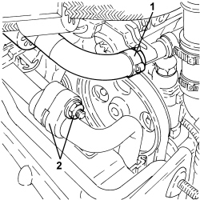
Applies to: engines: 3.2 JTS; all production periods
1. Open the cover for the fuse and relay box and disconnect connection (1a) and connection (1b) and release the relay (1c) from its housing.
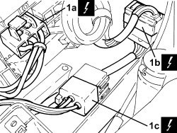
Applies to: engines: 3.2 JTS; all production periods
1. Undo the nut and disconnect the earth lead.
Description | Connector | |
|---|---|---|
1 | Earth on engine |
2. Disconnect the electrical connection for the left head Lambda sensor on the precatalyzer.
3. Detach the electrical connection for the alternator cooling fan.
Description | Connector | |
|---|---|---|
3 | Alternator cooling fan |
4. Disconnect the coupling for the automatic transmission control unit.
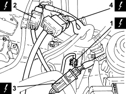
Applies to: engines: 3.2 JTS; all production periods
1. Disconnect the engine coolant hose from the radiator upper connector.
2. Undo the nuts and disconnect the air conditioning system refrigerant pipes from the condenser.

Applies to: engines: 3.2 JTS; all production periods
1. Undo the nuts and disconnect the inlet/outlet pipes from the power steering fluid cooling radiator.
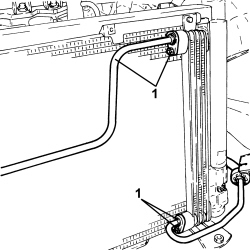
Applies to: engines: 3.2 JTS; all production periods
1. Disconnect the engine coolant hose from the radiator lower connector.

Applies to: engines: 3.2 JTS; all production periods
1. Raise the engine cooling radiator assembly and remove it from the mountings.
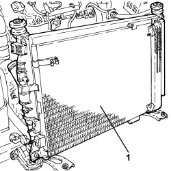
Applies to: engines: 3.2 JTS; all production periods
1. Undo the fixing bolts and remove the two engine coolant radiator assembly supports.

Applies to: engines: 3.2 JTS; all production periods
1. Undo the bolt and disconnect the supply and return pipes from the air conditioning compressor and remove them.

Applies to: engines: 3.2 JTS; all production periods
1. Undo the bolt for the connector and disconnect the power assisted steering fluid supply pipe from the pump.

Applies to: engines: 3.2 JTS; all production periods
1. Undo the bolt fixing the power assisted steering fluid rigid supply pipe to the suspension crossmember.
2. Open the clips securing the engine coolant pipe.
3. Undo the bolts fixing the power assisted steering fluid rigid supply pipe to the suspension crossmember and move it to one side.
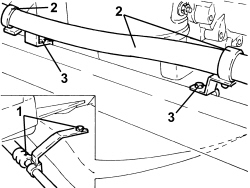
Applies to: engines: 3.2 JTS; all production periods
1. Unscrew the anti-theft siren fixing bolts and move it to one side.
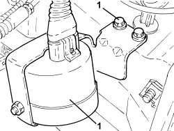
Applies to: engines: 3.2 JTS; all production periods
1. Undo the nut fixing the starter motor and alternator supply leads to the battery positive.
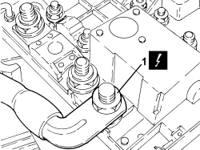
Applies to: engines: 3.2 JTS; all production periods
1. Loosen the band and disconnect the engine cooling system supply pipe from the multi-way connector.
2. Disconnect the cable from the gear selector.
3. Adjust the clips and remove the gear control cable (2) from the bracket.
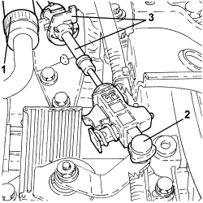
Applies to: engines: 3.2 JTS; all production periods
1. Detach the electrical connection for the brake servo vacuum sensor.
Description | Connector | |
|---|---|---|
1 | Brake servo vacuum sensor |
2. Disconnect the rapid connector for the vacuum pipe from the brake servo.
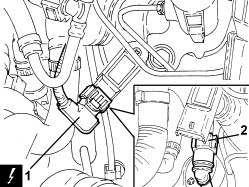
Applies to: engines: 3.2 JTS; all production periods
1. Loosen the band and disconnect the degassing pipe from the engine coolant reservoir.
2. Undo the nuts securing the engine coolant reservoir and remove it.

Applies to: engines: 3.2 JTS; all production periods
1. Loosen the band and disconnect the brake servo vacuum pipe from the intake chamber.
2. Disconnect the electrical connection for the Lambda sensor upstream of the catalytic converter, right head.
Description | Connector | |
|---|---|---|
2 | Lambda sensor on pre-catalyzer |
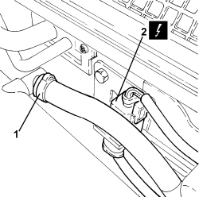
Applies to: engines: 3.2 JTS; all production periods
Op. 1048A63 HOSE CONNECTING RESONATOR, FLOW METER AND THROTTLE BODY - R.R.
Op. 1056F09 HOT FILM AIR FLOW METER - R.R
- Remove the single-acting valve assembly for the brake servo.
Applies to: engines: 3.2 JTS; all production periods
1. Detach the electrical connection for the throttle casing.
Description | Connector | |
|---|---|---|
1 | Integrated throttle casing actuator |

Applies to: engines: 3.2 JTS; all production periods
1. Disconnect the electrical connection for the air pressure sensor on the intake chamber.
Description | Connector | |
|---|---|---|
1 | Absolute pressure sensor |
2. Disconnect the rapid connector for the engine oil vapour recovery pipe from the right cylinder head.
3. Disconnect the electrical connection for the intake chamber fuel vapour flow enablement solenoid.
Description | Connector | |
|---|---|---|
3 | Fuel vapour recovery solenoid valve |
4. Disconnect the rapid connector for the fuel vapour pipe from the intake chamber fuel vapour flow enablement solenoid.
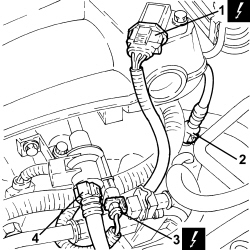
Applies to: engines: 3.2 JTS; all production periods
1. Undo the bolts fixing the wiring bracket to the intake chamber.
2. Undo the bolts fixing the intake chamber and raise it as necessary to undo the bolt fixing the water pump rigid intermediate fluid inlet pipe.
- Remove the intake chamber.

Applies to: engines: 3.2 JTS; all production periods
1. Disconnect the rapid connector for the fuel return pipe from the three-way connector.
2. Disconnect the rapid connector for the fuel supply pipe from the spherical connector.
3. Undo the bolts fixing the right head catalytic preconverter to the front exhaust pipe.

Applies to: engines: 3.2 JTS; all production periods
1. Disconnect the rapid connectors for the heater supply/return pipes.
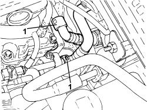
Applies to: engines: 3.2 JTS; all production periods
1. Undo the bolts fixing the left head catalytic preconverter to the front exhaust pipe.

Applies to: engines: 3.2 JTS; all production periods
1. Undo the fastenings securing the catalyzer assembly to the mounting bracket.
2. Undo the bolts securing the catalyzer assembly mounting bracket to the bodyshell and remove it.
- Remove the gaskets.
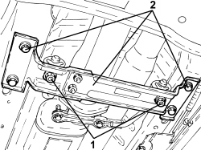
Applies to: engines: 3.2 JTS; all production periods
1. Undo the nuts fixing the front exhaust pipes to the catalytic converter flange and then remove them.
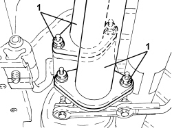
Applies to: engines: 3.2 JTS; all production periods
1. Undo the bolts and remove the power steering box heat guard.

Applies to: engines: 3.2 JTS; all production periods
1. Undo the bolts (1a) and remove the heat guard (1b).
2. Mark the position of the two flanges connecting the rear drive idler casing to the propeller shaft.
3. Undo the bolts fixing the two flanges connecting the rear drive idler casing to the propeller shaft.
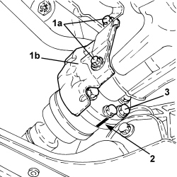
Applies to: engines: 3.2 JTS; all production periods
1. Undo the nut fixing the left steering rod to the steering knuckle.
2. Disconnect the left steering rod (2a) from the steering knuckle using the tool (2b).
Tool | Description | Function | Validity |
|---|---|---|---|
1871000700 | Extractor | Extracting steering rod from strut |

Applies to: engines: 3.2 JTS; all production periods
1. Undo the lower bolt securing the fork to the lower track control arm.
2. Undo the nut and disconnect the left front steering knuckle from the upper track control arm.
- Retract the left front driveshaft to release it from the differential. Secure the steering knuckle to the upper track control arm.

Applies to: engines: 3.2 JTS; all production periods
1. Undo the nut fixing the right steering rod to the steering knuckle.
2. Disconnect the right steering rod (2a) from the steering knuckle using the tool (2b).
Tool | Description | Function | Validity |
|---|---|---|---|
1871000700 | Extractor | Extracting steering rod from strut |

Applies to: engines: 3.2 JTS; all production periods
1. Undo the nut fixing the right front steering knuckle to the upper track control arm.
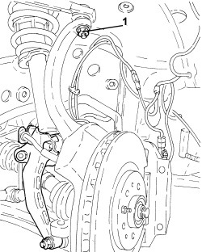
Applies to: engines: 3.2 JTS; all production periods
1. Disconnect the right front driveshaft from the differential.
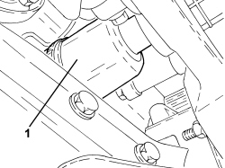
Applies to: engines: 3.2 JTS; all production periods
- Position a hydraulic jack underneath the gearbox to remove the two lower reaction rods as described below.
1. Undo the fastenings securing the engine side lower reaction rod to the front suspension frame and to the oil sump and remove it.

Applies to: engines: 3.2 JTS; all production periods
1. Undo the fastenings securing the gearbox side lower reaction rod to the front suspension frame and to the gearbox and remove it.

Applies to: engines: 3.2 JTS; all production periods
- Remove the hydraulic jack positioned previously underneath the gearbox
1. Fit a suitable power unit mounting bracket on the right cylinder head as illustrated in the diagram.
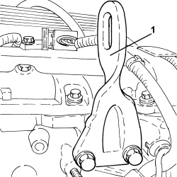
Applies to: engines: 3.2 JTS; all production periods
1. Fit a suitable power unit mounting bracket on the left cylinder head as illustrated in the diagram.
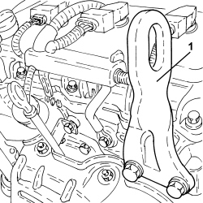
Applies to: engines: 3.2 JTS; all production periods
1. Fit a suitable power unit mounting bracket on the gearbox as illustrated in the diagram.
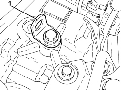
Applies to: engines: 3.2 JTS; all production periods
1. Support the power unit using a hydraulic hoist (1a) and the tool (1b) connected to the brackets fitted previously.
Tool | Description | Function | Validity |
|---|---|---|---|
1871001700 | Balance | Removing/ refitting power unit |
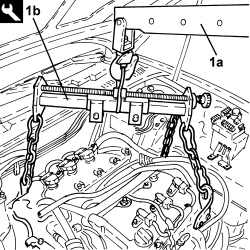
Applies to: engines: 3.2 JTS; all production periods
1. Undo the bolt securing the earth lead to the rigid support.
2. Undo the bolts fixing the rigid power unit support to the gearbox.
3. Undo the bolts (3a) fixing the flexible mounting to the rigid support; remove the rigid support (3b) from the gearbox.
4. Undo the bolts (4a) securing the flexible mounting (4b) to the bodyshell and remove it.
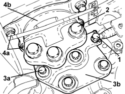
Applies to: engines: 3.2 JTS; all production periods
1. Undo the bolts fixing the power unit flexible mounting, timing side and remove it.
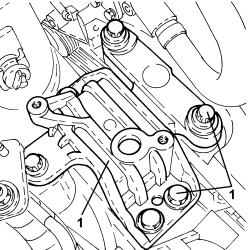
Applies to: engines: 3.2 JTS; all production periods
1. Undo the bolt fixing the timing side power unit lower rigid support to the engine block.
2. Undo the bolts (2a) fixing the timing side power unit upper rigid support (2b) and remove it competely.
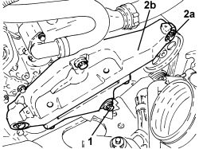
Applies to: engines: 3.2 JTS; all production periods
- Move the power unit forwards to allow the removal of the alternator as described below.
1. Adjust the belt tensioner and remove the auxiliary drivebelt.
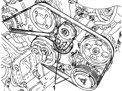
Applies to: engines: 3.2 JTS; all production periods
1. Disconnect the alternator leads.
Description | Connector | |
|---|---|---|
1 | Alternator |
2. Undo the upper bolt (2a) and the lower bolt (2b) and remove the alternator (2c).
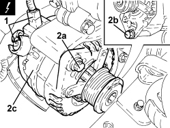
Applies to: engines: 3.2 JTS; all production periods
1. Using the hydraulic hoist, remove the power unit from the engine compartment and place it on a suitable bench.

Applies to: engines: 3.2 JTS; all production periods
- Release the power unit from the support tools.
Applies to: engines: 3.2 JTS; all production periods
Refitting
Removing- Place the power unit partly in the engine compartment using a hydraulic hoist to allow the fitting of the alternator, the auxiliary belt and the timing side rigid support as described below.
- Position the alternator, connect the electrical connections and secure it using the screw and the bolt.
Component | Fastening | dia | Value (daNm) | Validity |
|---|---|---|---|---|
ALTERNATOR | Bolt | M10 | 4.5 ÷ 5.5 | 3.2 JTS |
Component | Fastening | dia | Value (daNm) | Validity |
|---|---|---|---|---|
ALTERNATOR | Nut | M12 | 8.5 ÷ 10.5 | 3.2 JTS |
- Adjust the belt tensioner and fit the auxiliary drivebelt.
- Place the timing side power unit support rigid support its housing and tighten the bolts to the recommended torque.
Component | Fastening | dia | Value (daNm) | Validity |
|---|---|---|---|---|
Timing side lower rigid support to engine | Bolt | M10 | 5.4 ÷ 6.6 | 3.2 JTS |
Component | Fastening | dia | Value (daNm) | Validity |
|---|---|---|---|---|
Timing side upper rigid support to engine | Bolt (to be replaced) | M12 | 6.3 ÷ 7.7 + 90° | 3.2 JTS |
- Place the power unit in its definitive position in the engine compartment.
- Place the timing side power unit flexible mounting in its housing and secure it tightening the bolts to the recommended torque.
Component | Fastening | dia | Value (daNm) | Validity |
|---|---|---|---|---|
Timing side flexible mounting to rigid mount | Bolt (to be replaced) | M12 | 6.3 ÷ 7.7 + 90° |
Component | Fastening | dia | Value (daNm) | Validity |
|---|---|---|---|---|
Timing side flexible mounting to body | Bolt (to be replaced) | M12 | 6.3 ÷ 7.7 + 90° |
Component | Fastening | dia | Value (daNm) | Validity |
|---|---|---|---|---|
Timing side flexible mounting to body | Bolt | M10 | 5.4 ÷ 6.6 |
- Fit the flexible mounting in its housing and secure it to the bodyshell, gearbox side, tightening the bolts to the recommended torque.
Component | Fastening | dia | Value (daNm) | Validity |
|---|---|---|---|---|
Gearbox side flexible mounting to body | Bolt | M10 | 5.4 ÷ 6.6 |
- Fit the gearbox side rigid support and tighten the bolts to the recommended torque.
Component | Fastening | dia | Value (daNm) | Validity |
|---|---|---|---|---|
Gearbox side power unit rigid support | Bolt (to be replaced) | M10 | 4.5 ÷ 5.5 + 60° | 3.2 JTS CAE |
- Tighten the bolts fixing the flexible mounting to the gearbox side rigid support to the recommended torque.
Component | Fastening | dia | Value (daNm) | Validity |
|---|---|---|---|---|
Gearbox side flexible mounting to mount | Bolt (to be replaced) | M12 | 6.3 ÷ 7.7 + 45° |
- Connect the earth lead to the gearbox side rigid support and tighten the bolt.
- Remove the hydraulic hoist using the engine lifting tool.
- Place the gearbox side lower reaction rod in its housing and secure it to the suspension frame and to the gearbox tightening the bolts to the recommended torque.
Component | Fastening | dia | Value (daNm) | Validity |
|---|---|---|---|---|
Gearbox side lower reaction rod to front suspension frame | Bolt (to be replaced) | M12 | 6.3 ÷ 7.7 + 60° |
Component | Fastening | dia | Value (daNm) | Validity |
|---|---|---|---|---|
Gearbox side lower reaction rod to gearbox | Bolt | M10 | 5.4 ÷ 6.6 |
- Place the engine side lower reaction rod in its housing and secure it to the suspension frame and to the oil sump tightening the bolts to the recommended torque.
Component | Fastening | dia | Value (daNm) | Validity |
|---|---|---|---|---|
Engine side lower reaction rod to front suspension frame | Bolt (to be replaced) | M12 | 6.3 ÷ 7.7 + 60° |
Component | Fastening | dia | Value (daNm) | Validity |
|---|---|---|---|---|
Engine side lower reaction rod to engine | Bolt | M10 | 5.4 ÷ 6.6 |
- Place the right front driveshaft back in its housing.
- Tighten the nut fixing the right front steering knuckle to the upper track control arm to the recommended torque.
Component | Fastening | dia | Value (daNm) | Validity |
|---|---|---|---|---|
Front wheel strut to upper wishbone | Nut | M10 | 4.1 ÷ 4.9 |
- Connect the right steering link to the steering knuckle and secure by tightening the nut to the specified torque.
Component | Fastening | dia | Value (daNm) | Validity |
|---|---|---|---|---|
Steering rod to wheel strut | Nut | M12 | 9.0 ÷ 11.0 |
- Place the left front driveshaft back in its housing.
- Connect and tighten the nut fixing the left front steering knuckle to the upper track control arm to torque.
Component | Fastening | dia | Value (daNm) | Validity |
|---|---|---|---|---|
Front wheel strut to upper wishbone | Nut | M10 | 4.1 ÷ 4.9 |
- Connect the left steering link to the steering knuckle and tighten the nut to the specified torque.
Component | Fastening | dia | Value (daNm) | Validity |
|---|---|---|---|---|
Steering rod to wheel strut | Nut | M12 | 9.0 ÷ 11.0 |
- Refit the propeller shaft in its seat, aligning the reference marks made on removal.
- Tighten the front constant velocity joint bolts to the PTU to the specified torque in a cross sequence.
Component | Fastening | dia | Value (daNm) | Validity |
|---|---|---|---|---|
Propeller shaft - rear drive idler casing side | Bolt | M8 | 3.1 ÷ 3.7 | 3.2 JTS |
- Place the propeller shaft heat shield in its housing and secure it using the bolts.
- Place the power assisted steering box heat guard back in its housing and tighten the bolts.
- Place the front drainage pipes complete with seals in their housings and connect them to the catalytic converters tightening the nuts to the recommended torque.
Component | Fastening | dia | Value (daNm) | Validity |
|---|---|---|---|---|
Front exhaust pipe to catalyser assembly | Nut | M8 | 2.2 ÷ 2.6 | 3.2 JTS |
- Place the catalyzer mounting bracket in its housing and secure it using the bolts.
- Connect the catalyzers to the mounting bracket using the nuts.
- Tighten the bolts fixing the left head catalytic preconverter to the front exhaust pipe to the recommended torque.
Component | Fastening | dia | Value (daNm) | Validity |
|---|---|---|---|---|
Front exhaust pipe to preconverter | Bolt | M8 | 2.2 ÷ 2.6 | 3.2 JTS |
- Tighten the bolts fixing the right head catalytic preconverter to the front exhaust pipe to the recommended torque.
Component | Fastening | dia | Value (daNm) | Validity |
|---|---|---|---|---|
Front exhaust pipe to preconverter | Bolt | M8 | 2.2 ÷ 2.6 | 3.2 JTS |
- Connect the rapid connectors for the heater water supply and return pipes.
- Connect the fuel supply pipe rapid connector.
- Connect the fuel return pipe rapid connector.
- Place the intake chamber in its housing.
- Place the water pump rigid intermediate inlet pipe in position and secure it to the intake chamber using the bolt.
- Tighten the bolts fixing the intake chamber to the recommended torque.
Component | Fastening | dia | Value (daNm) | Validity |
|---|---|---|---|---|
Air chamber | Bolt | - | 2.3 | 3.2 JTS |
- Tighten the bolt fixing the engine wiring bracket to the intake chamber.
- Connect the rapid connector for the fuel vapour pipe to the solenoid.
- Connect the electrical connection for the fuel vapour solenoid valve.
- Connect the rapid connector for the oil vapour recovery pipe to the right cylinder head.
- Connect the electrical connection for the air pressure sensor on the intake chamber.
- Connect the electrical connection for the throttle casing.
- Place the single-acting valve assembly in its housing with the vacuum pipes.
Op. 1056F09 HOT FILM AIR FLOW METER - R.R
Op. 1048A63 HOSE CONNECTING RESONATOR, FLOW METER AND THROTTLE BODY - R.R.
- Connect the electrical connections for the Lambda sensors upstream of the catalytic preconverters.
- Connect and fasten the brake servo vacuum pipe using the band, intake chamber side.
- Place the engine coolant reservoir back in its housing and secure it using the nuts.
- Connect the degassing pipe to the engine coolant reservoir and fasten it using the band.
- Connect the rapid connector for the vacuum pipe to the brake servo.
- Connect the electrical connection to the vacuum sensor on the brake servo.
- Place the gear control cable in its housing and fasten it to the bracket and to the selector.
- Connect the system supply pipe using the band, multi-way connector side.
- Connect the starter motor supply lead and secure it using the nut.
- Place the anti-theft siren in its housing and secure it using the bolts.
- Place the power assisted steering box rigid fluid pipe in its housing and secure it to the suspension crossmember using the bolts.
- Connect the connector for the fluid supply pipe to the power steering pump.
- Connect the supply and return pipes to the air conditioning compressor and secure them using the bolt.
- Place the engine cooling radiator assembly supports in their housings and secure them using the bolts.
- Place the engine oil cooling radiator assembly in its housing.
- Connect the lower engine coolant hose to the radiator.
- Connect the power steering fluid inlet and outlet pipes and tighten the nuts.
- Connect the air conditioning system refrigerant pipes to the condenser using the nuts.
- Connect the upper engine coolant hose to the radiator.
- Connect the earth lead to the bodyshell and secure it using the nut.
- Connect the electrical connection for the automatic transmission.
- Connect the electrical connection for the alternator cooling fan.
- Connect the electrical connection for the Lambda sensor on the precatalyzer.
- Place the wiring in its housing in the fuse and relay box and connect the connections.
- Connect the air conditioning coolant return pipe intermediate flanges and secure them using the nut.
- Connect the flexible pipe to the power assisted steering pump intake and secure it using the band.
Op. 7210A18 R.R FRONT CROSSMEMBER
Op. 7210A15 R.R. FRONT WING/HEADLAMP HOUSING CROSSMEMBER
Op. 5540B82 RIGHT GAS DISCHARGE LIGHT CLUSTER - R.R.
Op. 5540B81 LEFT GAS DISCHARGE LIGHT CLUSTER - R.R.
Op. 5530B52 BATTERY SUPPORT/DRIP TRAY - R.R
Op. 2130A61 AIR DUCT ON AUTOMATIC TRANSMISSION - R.R.
Op. 5530A55 REAR ALTERNATOR COOLING PIPE - R.R.
Op. 5530A53 FRONT ALTERNATOR COOLING PIPE - R.R.
Op. 7055B91 RIGHT FRONT WHEEL ARCH LINER - R.R.
Op. 7055B90 LEFT FRONT WHEEL ARCH LINER - R.R.
Op. 7055B66 ENGINE COMPARTMENT DUST COVER IN RIGHT FRONT WHEEL ARCH - R.R.
Op. 7055B65 ENGINE COMPARTMENT DUST COVER IN LEFT FRONT WHEEL ARCH - R.R.
Op. 4450B12 FRONT WHEELS (TWO) - R+R
Op. 0010T84 COOLANT FOR AIR CONDITIONING SYSTEM - DEHYDRATE AND REPRESSURIZE
Op. 0010T20 ENGINE COOLANT - CHANGE
Topics linked from this page (30)
- 0010T20 ENGINE COOLANT - CHANGE
- 0010T44 CHANGE AUTOMATIC TRANSMISSION FLUIDS
- 0010T84 COOLANT FOR AIR CONDITIONING SYSTEM - DEHYDRATE AND REPRESSURIZE
- 1016A10 SOUND-PROOFING COVER - R.R
- 1048A63 HOSE CONNECTING RESONATOR, FLOW METER AND THROTTLE BODY - R.R.
- 1056F09 HOT FILM AIR FLOW METER - R.R
- 2130A61 AIR DUCT ON AUTOMATIC TRANSMISSION - R.R.
- 4450B12 FRONT WHEELS (TWO) - R+R
- 5530A53 FRONT ALTERNATOR COOLING PIPE - R.R.
- 5530A55 REAR ALTERNATOR COOLING PIPE - R.R.
- 5530B10 BATTERY - R+R
- 5530B52 BATTERY SUPPORT/DRIP TRAY - R.R
- 5540B81 LEFT GAS DISCHARGE LIGHT CLUSTER - R.R.
- 5540B82 RIGHT GAS DISCHARGE LIGHT CLUSTER - R.R.
- 7055B54 UNDER ENGINE PROTECTION/GUARD - R.R.
- 7055B65 ENGINE COMPARTMENT DUST COVER IN LEFT FRONT WHEEL ARCH - R.R.
- 7055B66 ENGINE COMPARTMENT DUST COVER IN RIGHT FRONT WHEEL ARCH - R.R.
- 7055B90 LEFT FRONT WHEEL ARCH LINER - R.R.
- 7055B91 RIGHT FRONT WHEEL ARCH LINER - R.R.
- 7210A15 R.R. FRONT WING/HEADLAMP HOUSING CROSSMEMBER
- 7210A18 R.R FRONT CROSSMEMBER
- 7210E10 R.R. FRONT BUMPER
- A010 ALTERNATOR
- C040 ENGINE EARTH
- K015 LAMBDA SENSOR ON PRE-CATALYZER
- K048 ABSOLUTE PRESSURE SENSOR
- K105 BRAKE SERVO VACUUM SENSOR
- L010 FUEL VAPOUR RECOVERY SOLENOID VALVE
- N075 BUILT-IN THROTTLE BODY ACTUATOR
- N194 ALTERNATOR COOLING FAN